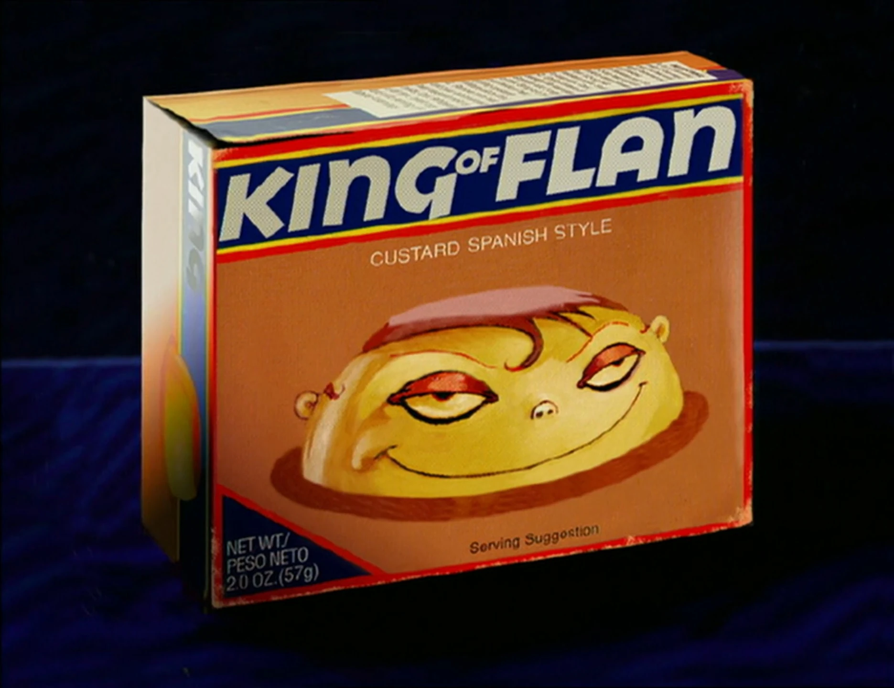

Courage's Scary Good Flan

Description
In Courage the Cowardly Dog, the “ultimate pudding” is actually a creamy, rich flan. Made from sweetened
condensed milk, eggs, and vanilla, it's baked in a caramel-coated mold for a deliciously smooth texture.
Chill it for a few hours, and you have a decadent dessert that's both comforting and impressive!
Ingredients
- Sweetened condensed milk
- Evaporated milk
- Eggs
- Vanilla Extract
- Sugar (for caramel)
Steps
- Melt sugar to make caramel and coat a mold.
- Blend milks, eggs, and vanilla.
- Pour into mold, bake in a water bath at 350°F for 50-60 minutes
- Chill and flip to serve.